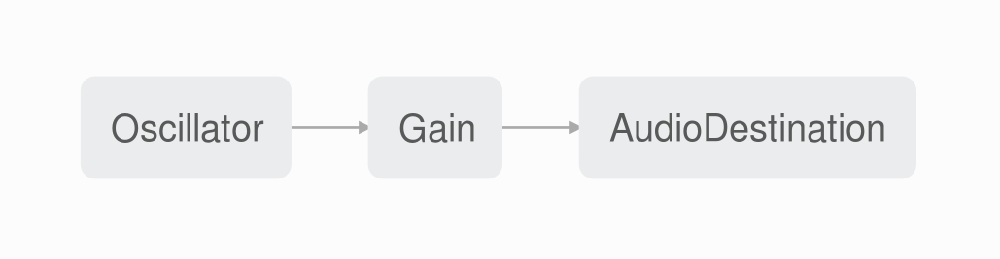

<style>

  * {
    box-sizing: border-box;
  }

  .slides>section {
    padding: 1% !important;
  }

  .midten {
    height: 100%;
    display: flex !important;
    flex-direction: column;
    justify-content: center;
  }

  .midten > * {
    text-align: center !important;
  }

  h1, h2, h3, h4 {
    text-align: left;
  }

  .reveal p {
    font-size: 150%;
  }

  img {
    border: none !important;
    background: inherit !important;
    box-shadow: none !important;
  }

  pre {
    font-size: 90% !important;
  }

  code {
    max-height: 100% !important;
  }

  .codeblock {
    background: black;
  }

  a {
    color: white !important;
    text-decoration: underline !important;
  }

</style>

<section class="midten">
  <h2>Audible Code</h2>
  <p>Stian Veum Møllersen</p>
  <p>@mollerse</p>
</section>

<section class="midten">
  <h2 class="fragment">I like music.</h2>
  <aside class="notes">
    <p>
      Ok, I have a confession to make - pause - I like music. This is usually the
      place where i make a joke about those who know me not being suprised, but in
      this crowd I don't think i know all that many people - So that wont work.
      But trust me, it would have been funny. So - I have loved music since I was
      very young. All the way back to my first CD from Ace of Base in the early
      90s.
    </p>
  </aside>
</section>

<section class="midten">
  <h2 class="fragment">I also like programming.</h2>
  <aside class="notes">
    <p>
      This might be less suprising, given where we are, but I also really enjoy
      making things with code. I love the way code gives me an outlet for
      creativity and experimentation. Write a couple of lines of code and the most
      wonderous things can happen on your screen - pure magic.
    </p>
  </aside>
</section>

<section class="midten">
  <h2>Music + Programming = &lt;3</h2>
  <aside class="notes">
    <p>
      The thought of combining two of my favourite things have allways been a
      dream of mine. Especially because I dont really have any talent whatsoever
      for traditional instruments - maybe except for finger-drums. Just ask my
      colleagues. That is why I got so exicted (yes, this is a Pointer Sisters
      reference) that I just couldn't hide it when I discovered that I could
      generate sounds with JavaScript in the browser. Yes! Finnaly my turn to
      rock out!
    </p>
  </aside>
</section>

<section class="midten">
  <h2>Enter WebAudio</h2>
  <aside class="notes">
    <p>
      WebAudio has existed in various forms since about 2010. It has many
      exciting abilities, but today we will take a closer look at what it can
      offer us in the form of audio synthesis - the creation of sound.
    </p>
  </aside>
</section>

<section data-state="hello">
  <h2>Hello WebAudio</h2>
  <div class="codeblock">
      <pre><code class="js">var context = new AudioContext();</code></pre>
    <pre class="fragment"><code class="js">var oscillator = context.createOscillator();
var amp = context.createGain();</code></pre>
    <pre class="fragment"><code class="js">oscillator.connect(amp);
amp.connect(context.destination);</code></pre>
    <pre class="fragment"><code class="js">oscillator.start();</code></pre>
    <pre class="fragment"><code class="js">amp.gain.value = 1;</code></pre>
  </div>
  <aside class="notes">
    <p>
      This is a hello world of sorts using WebAudio.
    </p>
  </aside>
</section>

<section class="midten">
  <h3>That was a lot to take in</h3>
  <aside class="notes">
    <p>
      That was a lot to take in. Oscillators? Gain? Amp? Context?
    </p>
  </aside>
</section>


<section>
  <h2>The WebAudio graph</h2>
  
  <aside class="notes">
    <p>
      If we visualize what we just made in something more digestable, like the
      WebAudio debugger graph from Firefox, we can see more clearly. An oscillator
      is a component that generates a signal with a given frequency. Some of you
      might remember this from school. A Gain node is a different kind of node
      that functions kind of like a gate. We can manipulate the gain-value of the
      Gain node and control how much of the signal from the oscillator we let
      through. We can use this to dynamically turn the sound on and off.
    </p>
  </aside>
</section>

<section>
  <h2>Make some noise!</h2>
  <pre><code>function Note() {
  //Initialization and node-creation here

  function start() {
    amp.gain.value = 1;
  }
  function stop() {
    amp.gain.value = 0;
  }

  return {start, stop};
}</code></pre>
</section>

<section class="midten">
  <h2>MIDI &mdash; Musical Instrument Digital Interface</h2>
  <aside class="notes">
    <p>
      A standard which defines a protocoll, digital interfaces and connectors
      for musical instruments.
    </p>
  </aside>
</section>

<section data-state="hellomidi">
  <h2>Connect a MIDI-device</h2>
  <pre><code>navigator.requestMIDIAccess()
  .then(midiConnected);</code></pre>
  <pre class="fragment"><code class="js">function midiConnected(midi) {
  for(entry of midi.inputs.values()) {
    entry.onmidimessage = function(msg) {
      var [code, note, velocity] = msg.data;

      code === 144 ? on(note) : off(note);
    };
  }
}</code></pre>
</section>

<section data-state="hello2">
  <h2>Playing different notes</h2>
  <pre class="fragment"><code class="js">function frequencyFromNoteNumber(note) {
  return 440 * Math.pow(2,(note-69)/12);
}

oscillator.frequency.value =
  frequencyFromNoteNumber(note);</code></pre>
</section>

<section data-state="hello3">
  <h2>Change the sound</h2>
  <pre class="fragment"><code class="js">oscillator.type = 'sawtooth';</code></pre>
</section>

<section data-state="basicsynth">
  <h2>Polyphonic synth</h2>
  <pre><code>var notes = {};
function on(note) {
  var n = Note(note);
  notes[note] = n;
  n.start();
}
function off(note) {
  notes[note].stop();
  delete notes[note];
}</code></pre>
</section>

<section class="midten">
  <h2>The Supersaw</h2>
  <p class="fragment">Multiple detuned sawtooth oscillators. Heavily used in the EDM style of music.</p>
  <aside class="notes">
    <p>
      Originally from the Roland JP-8000. It was made to emulate more than one
      sawtooth oscillator. Each sawtooth oscillator is slightly detuned against
      one another. This sort of sound gained some notoriety in the early 2000s
      with the rise of electronic dance music.
    </p>
  </aside>
</section>

<section data-state="supersaw">
  <h2>The Supersaw effect</h2>
  <pre class="fragment"><code class="js">function makeSaw(i, numSaws) {
  //Oscillator creation and init
  oscillator.detune.value =
    -detune + i * 2*(detune/(numSaws-1));
}</code></pre>
  <pre class="fragment"><code class="js">//Inside Note-function
for (var i = 0; i < numSaws; i++) {
  makeSaw(i, numSaws);
}</code></pre>
</section>

<section>
  <h2>What have we made?</h2>
  <div class="">
    
  </div>
</section>

<section class="midten">
  <h2>Demo!</h2>
  <span>Code: <a href="http://github.com/mollerse/audible-code-presentation">github/mollerse/audible-code-presentation</a>
  </span>
</section>

<section class="midten">
  <h2>Congratulations!</h2>
  <p>You are now musicians.</p>
</section>

<section class="midten">
  <h1>Thanks for listening!</h1>
  <p>Stian Veum Møllersen</p>
  <p>@mollerse</p>
</section>
